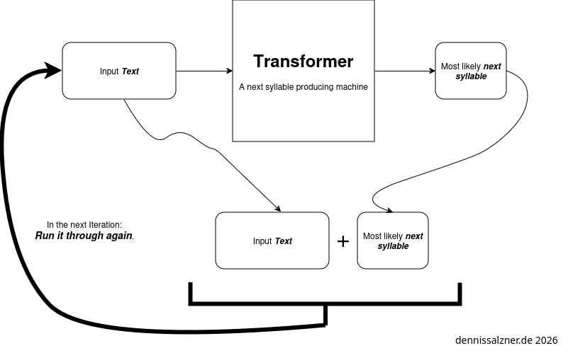
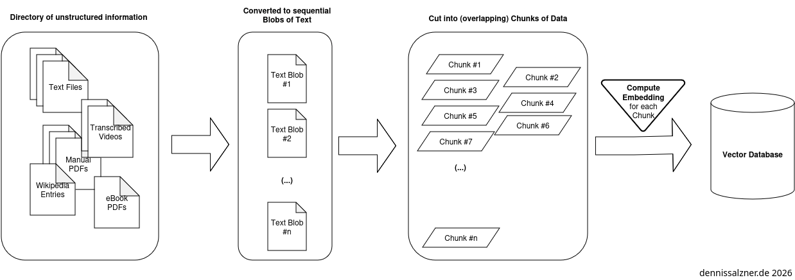
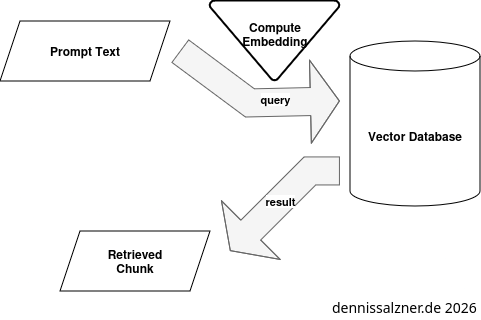
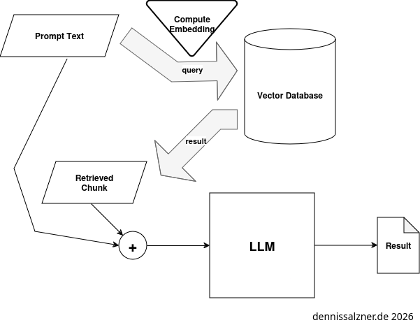
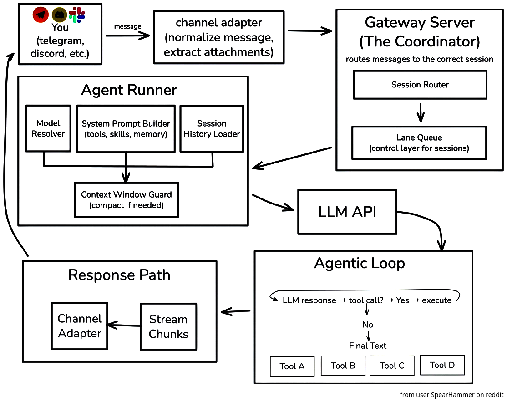

What
After having built an understanding of “Large Language Models” (LLMs) and an intuition around which tasks they excel at, we can put that knowledge to use.
In the following I’ll demonstrate variations of “Retrieval-Augmented Generation” (RAG) pipelines and “Function/Tool Calling”. We will further look at how a personal AI assistant, OpenClaw (formerly called Clawdbot and later Moltbot) works.
Contents
Contents
When
Recapitulation

In the previous post we’ve established that LLMs can generated text. They do this by predicting the statistical likelihood of a given next syllable of text.
When we **re-run them* over and over again we can produce longer and longer text.
Internal Structure of an LLM
Internally an LLM implements
- the transformer architecture, a special-type of encoder-decoder neural network,
- positional encoding
- and attention layers.
I wrote about this previously (see part 2 of the series, “LLMs beyond the Hype”).
Background
With the background on how LLMs work, we can understand what we need to put them to use.
Putting LLMs to productive use
We find that in order to use an LLM productively we need two things:
-
we need to be able to add our own information in order to enhance the quality of the output
-
and we need to get structured information out that can be interpreted and used by our software
The information we add is more formally called context. A “Retrieval-Augmented Generation” (RAG)-Pipeline is a way to automatically add relevant context from a database of user data.
In order to get information out of the LLM in a usable format we use tool or function calling
Background
In the following I’ll briefly explain RAG, Function Calling and how A.I agents work. In the next section implementation I’ll demonstrate in code how these can be implemented as easy as possible in order to further deepen our understanding.
RAG
Let’s first look at how “Retrieval-Augmented Generation” (RAG) works.
Necessity of Contextual Information
Much like with human communication an LLMs need context. How else would it know which film is your favorite? You have to tell it before hand. Keep in mind that A.I and more specifically LLMs do not work wonders.
If you hire new interns and you take 3-6 months to train them and you expect an LLM to perform the same, you will - at the very least - have to provide the same level of context information. Surely it can chew through information more efficiently, but we also need to make sure to not confuse the LLM. That is, provide it with only the relevant information to minimize mistakes. Additionally the relevant information needs to fit in the very limited context window of the LLM.
Adding Information during Training vs. providing Context
An LLM has two sources of information: The implicit information stored in the weights of the neurons within the transformer and additional information we put in the context window. The context window is in simple terms the text we add before our prompt.
The former is computationally expensive to add and inflexible to alter and permanent after training. The later can be altered during use and easily reset. This is sort of like “short-term” and “long-term” memory.
Context Window Size and Context Selection
An LLM has a limited context size. Modern state-of-the-art LLMs can handle up to 2 million tokens, but cheaper and local hosted LLMs might have much smaller context windows.
We thus need to select the right information to add to the context window.
How to Add Context
So how do we add context? As we will see there are different levels of sophistication.
Simplest Form: Prompt Engineering
In the simplest form we just add additional information before our prompts. This is ideal for information that fits into the context window of the LLM.
For example, if we prompt
What is my favorite movie?
The LLM can’t know, but if we instead prompt
My favorite movie is xyz (1990).
What is my favorite movie?
It has a higher chance of giving a correct answer, because the relevant information is in the context window.
Auto-Prepend Context to the Prompt
To automate this some more we can use any type of custom data ingestion. In essence this is searching algorithm to produce a relevant chunk of data and automatically prepend it as a text before the prompt.
This is exactly what a Retrieval-Augmented Generation (RAG) pipeline does.
Retrieval-Augmented Generation (RAG) Pipeline
A RAG pipeline is the most sophisticated approach to handle large data sets. It must ingest information to a vector database to then use the databse to retrieve information and augment the prompt with it.
Ingest data into the Vector Database
In order to do this large amounts of data are ingested into a database as chunks. An embedding is computed (see “LLMs beyond the Hype”) that is used to locate the chunks.

The chunks ideally overlap. Typical chunk sizes are 128 to 256 token for granular information or 512 to 1024 tokens for more context. 100 tokens correspond approx. to 75 words. This means the large range holds approximately one medium-sized Wikipedia article.
Retrieval from the Vector Database
Retrieving information from the Vector Database is straight forward: an embedding vector is calculated in the same way for the prompt. It is then used to query the vector database. The database then returns the corresponding chunk.

Augmentation of the Prompt using the Vector Database
When we query the LLM the RAG automatically adds the chunks of information as context to the prompt.

Background on Function or Tool Calling
With the ability to use the LLM and to add additional contextual information we are still lacking a key ingredient in order to use an LLM productively. If we want to integrate it into our own software, we need to be able to call it like a function (hence the term “function calling”) in our applications, we need it to return structured output that is machine readable.
Response Format
Interestingly there is a consensus on the internet that returning structured data in XML format is beneficial. The reason is probably that the LLMs are trained on the internet and HTML is syntactically close to XML. Additionally the LLMs have seen many XML sitemaps.
Prompt structure
The core idea is to prompt the LLM in natural language, but ask it to return an answer in machine readable format.
I’ve used the following prompt to have the LLM guesstimate the most likely country of origin of name.
For this we need an LLM that supports “function calling”. The model “MFDoom/deepseek-r1-tool-calling:14b” does. Most (all?) IBM Granite models do as well.
In Python using the requests library and an ollama server the prompt payload may look something like this:
def getCountryForName(name):
model = "<ollama model name>"
prompt = f'What country does the name "{name}" most likely originate from?'
payload = {
"model": model,
"messages": [
{"role": "user", "content": prompt },
],
"format": {
"type": "object",
"properties": {
"country": {
"type": "string"
},
},
"required": [
"name",
"country",
]
}
}
The point is that we have told the LLM to respond with JSON formated text containing a “country” key.
With this we can call the function from our code
getCountryForName(name)
ollama will run the LLM and respond with properly formated JSON that we can then read the country from with
json.loads(result)["country"]
Background on A.I Assistants and OpenClaw
So we’ve seen how function/tool calling works in order to retrieve machine-readable structured output. What if we go further and ask the LLM to return structured output that are shell commands and can be run on the computer terminal? If we’re feeling lucky we might even go so far as to automatically run the commands without even checking them.
Imagine a prompt like this one (taken from a blog post on medium [1]):
>>> Convert the following natural language request into a valid shell command.
... Return ONLY the shell command without any explanations.
...
... Example:
... - Input: "List all running containers"
... - Output: "podman ps"
...
... - Input: "Show disk space usage"
... - Output: "df -h"
...
... Now convert this request: "list all text files"
The part
"list all text files"
is my personal prompt in natural language. The rest is to make sure the LLM responds with shell commands that can be run.
Limitations
I tried it on ibm/granite4.0-preview:tiny and the result I got was this:
<response>
find ./ -type f -name "*.txt" | less # For listing text files in the current directory; adjust as needed for subdirectories
</response>
Evidently we could just blindly run this response in our Linux terminal.
But we can immediately see that the commands have issues:
- the working directory is “./” - we never asked for this. we don’t know what directory the LLM is currently in.
lessapplies pagination and reduces the output to 23 lines effectively cutting the output ofls- we also never asked for that.
And if I follow up with
no, in my home directory
The Granite model responds with
<response>To list all text files within your current home directory, use the following shell command:
find ~ -type f \( -name "*.txt" -o -name "*.log" \) -print # Adjust file extensions as needed
This command recursively searches for files with `.txt` or `.log` extensions in your home directory (`~`) and lists their paths. You
may need to adjust the file extensions according to your specific needs (e.g., adding other types like `.doc`, `.docx`, etc.). If
you want a plain list of just filenames without additional info, replace `-print` with `ls`.</response>
Now that response
- is not formatted in a way we can directly run - a violation of what we asked
- and it added *.log files - which again I didn’t ask for
- at least it is now searching the home directory
A.I Agents and OpenClaw
If we ignore the limitations and take the risks we can still build A.I agents.
OpenClaw is open-source experimental A.I agent that people use to experiment with the boundaries of what is possible. It is not safe to use or production ready. I also won’t run it, but I had a detailed look at the code and how it works. You can of course isolate it in a docker container, but as soon as you want to experiment with useful use-cases, you’ll need to give up private data to the vast amount of cloud APIs that OpenClaw runs in the background.
Calling command-line binaries from LLM
In the OpenClaw source code [2] we see such tool/function calls.
export function createBrowserTool(opts?: {
[..]
name: "browser",
description: [
"Control the browser via OpenClaw's browser control server (status/start/stop/profiles/tabs/open/snapshot/screenshot/actions).",
'Profiles: use profile="chrome" for Chrome extension relay takeover (your existing Chrome tabs). Use profile="openclaw" for the isolated openclaw-managed browser.',
'If the user mentions the Chrome extension / Browser Relay / toolbar button / “attach tab”, ALWAYS use profile="chrome" (do not ask which profile).',
'When a node-hosted browser proxy is available, the tool may auto-route to it. Pin a node with node=<id|name> or target="node".',
"Chrome extension relay needs an attached tab: user must click the OpenClaw Browser Relay toolbar icon on the tab (badge ON). If no tab is connected, ask them to attach it.",
"When using refs from snapshot (e.g. e12), keep the same tab: prefer passing targetId from the snapshot response into subsequent actions (act/click/type/etc).",
'For stable, self-resolving refs across calls, use snapshot with refs="aria" (Playwright aria-ref ids). Default refs="role" are role+name-based.',
"Use snapshot+act for UI automation. Avoid act:wait by default; use only in exceptional cases when no reliable UI state exists.",
`target selects browser location (sandbox|host|node). Default: ${targetDefault}.`,
hostHint,
].join(" "),
Essentially what they are doing is to provide a tool to control a web browser. It is a wrapper (human coded, vibe coded?) around the browser with a simple command set. It supports the commands:
- status
- start
- stop
- profiles
- tabs
- open
- snapshot
- screenshot
- actions
In the prompt they are telling the LLM that a browser exists and that it may use these commands.
When the LLM, in it’s structured machine-readable text output, specifies it would like to invoke, for instance browser status OpenClaw will automatically execute it.
Integration with Chat and Voice Control
In order to interact with OpenClaw they’ve added integrations for popular chat programs such as WhatsApp and Telegram.
There is also an Android App [4] that uses Androids built-in speech-to-text to transfer voice to text, then prompt OpenClaw and transfer the text response back to speech using ElevenLabs Text-to-Speech [5].
Schedulung
OpenClaw contains a module to control CRON, the Linux job scheduler. With this it can theoretically add tasks to be run at a later time and could also prompt itself at a later time. I’m unsure, if this will work reliably, but it is certainly an interesting thought.
Overall OpenClaw Architecture
On Reddit a user “SpearHammer” posted a great architecture image of OpenClaw [3]. It helped me greatly in understanding OpenClaw. In essence OpenClaw retrieves messages from chat programs. It prompts the LLM, runs commands, if it needs to, and sends the responses back.

How
Implementation
In the following I’ll share some simple implementations to demonstrate how some of the above works and to accompany what was mentioned above.
Full-blown RAG
I’ve built a RAG using Postgres as a database with the PGVectorStore vector-store wrapper, the HuggingFaceEmbedding Python library and LlamaCPP to query. That all kind of worked, but was a chore to set up and for me it was not worth the effort.
Simple RAG with in-memory database
Some time later I vibe-coded an in-memory database with DeepSeek or ChatGPT - I don’t remember. It works about as poorly as you’d expect, but it’s simple code that demonstrates the principle.
import os
import numpy as np
from llama_cpp import Llama
from sklearn.feature_extraction.text import TfidfVectorizer
from sklearn.metrics.pairwise import cosine_similarity
# Step 1: Load the text files
def load_text_files(directory):
documents = []
for filename in os.listdir(directory):
if filename.endswith(".txt"):
with open(os.path.join(directory, filename), 'r', encoding='utf-8') as file:
documents.append(file.read())
return documents
# Step 2: Embed the text using TF-IDF
def embed_text(documents):
vectorizer = TfidfVectorizer()
embeddings = vectorizer.fit_transform(documents)
return embeddings, vectorizer
# Step 3: Retrieve relevant documents
def retrieve_documents(query, embeddings, vectorizer, top_k=3):
query_embedding = vectorizer.transform([query])
similarities = cosine_similarity(query_embedding, embeddings).flatten()
top_indices = similarities.argsort()[-top_k:][::-1]
return top_indices, similarities[top_indices]
# Step 4: Truncate context to fit within the model's context window
def truncate_context(context, max_tokens=500):
# Split the context into words and truncate
words = context.split()
truncated_context = " ".join(words[:max_tokens])
return truncated_context
# Step 5: Generate a response using llama_cpp
def generate_response(llm, query, retrieved_documents, max_tokens=500):
context = " ".join(retrieved_documents)
context = truncate_context(context, max_tokens) # Truncate context
prompt = f"Context: {context}\nQuery: {query}\nAnswer:"
response = llm(prompt, max_tokens=100, stop=["\n"], echo=False)
return response['choices'][0]['text']
# Main function
def rag_pipeline(query, directory, llm):
# Load text files
documents = load_text_files(directory)
# Embed text
embeddings, vectorizer = embed_text(documents)
# Retrieve relevant documents
top_indices, _ = retrieve_documents(query, embeddings, vectorizer)
retrieved_documents = [documents[i] for i in top_indices]
# Generate response
response = generate_response(llm, query, retrieved_documents)
return response
# Example usage
if __name__ == "__main__":
# Initialize llama_cpp model
llm = Llama(model_path="<home>/.ollama/models/blobs/sha256-<ollama model to use>", n_ctx=4096)
# Directory containing text files
directory = "<notes directory>"
# Query
query = "What is good and what isn't?"
# Run RAG pipeline
response = rag_pipeline(query, directory, llm)
print(response)
Function/Tool Calling
In order to demonstrate function/tool calling I’ve written another small Python script. It allows us to call a function with a name as string and the LLM will be queries for the most likely origin of the name.
When reading through the thought process of the LLM with deepseek, a model capable of imitating reasoning/a chain of thought, we actually see how it regurgitates information learned from the internet about name origins and meaning of names in different languages in order to produce a reasonable guess of the origin of the name
This is the kind of task that is ideal for an LLM as we’re not in interested in 100% accurate answers and in this case they also do not exist. A German sounding name can be Swiss, Austrian, German, Spanish or even Brazilian, as people may have moved to these countries generations ago. It’s a simple example for function calling, where LLM hallucinations do not bother us.
import json
import requests
url = "http://localhost:11434/api/chat"
def getCountryForName(name):
model = "<ollama model name>"
prompt = f'What country does the name "{name}" most likely originate from?'
payload = {
"model": model,
"messages": [
{"role": "user", "content": prompt },
],
"format": {
"type": "object",
"properties": {
"country": {
"type": "string"
},
},
"required": [
"name",
"country",
]
}
}
result = ""
response = requests.post(url, json=payload, stream=True)
for line in response.iter_lines():
if line:
data = json.loads(line)
result += data.get("message", {}).get("content", "")
return json.loads(result)["country"]
name = "Heinz Rudolf"
print(f'{name}; {getCountryForName(name)}', flush=True)
Conclusion
We’ve put LLMs to some use by adding context information to enhance the quality of responses and exploring function/tool calling in order to retrieve structured output and run an LLM as a function in our code. This also allows giving the LLM the ability to run binaries directly on our computer and, by extension, to build A.I agents. The core issue is still the reliability and quality of responses. The responses of an LLM are currently still too unpredictable for most productive use-cases. The principle is still based purely on trained statistical patterns of text and I have doubts that there can be significant increases in quality of responses with current approaches. Nevertheless all of this is a glimpse of what could be and basic voice controlled chat bots that used to be very hard to build work reasonably well now.
1] https://medium.com/@Shamimw/using-ai-agents-to-execute-shell-scripts-with-langgraph-using-ollama-a-smarter-approach-to-679fd3454b09 2] https://github.com/openclaw/openclaw/blob/d8d69ccbf464788a3ac0406b917d422ddf0dd84e/src/agents/tools/browser-tool.ts#L245 3] https://www.reddit.com/media?url=https%3A%2F%2Fpreview.redd.it%2Feveryone-talks-about-clawdbot-openclaw-but-not-many-people-v0-82w3z00uhxig1.jpeg%3Fwidth%3D4320%26format%3Dpjpg%26auto%3Dwebp%26s%3D75b0aafaec773655026610a61bf7d2efe02916c6 4] https://github.com/openclaw/openclaw/blob/v2026.2.12/apps/android/app/src/main/java/ai/openclaw/android/voice/TalkModeManager.kt 5] https://github.com/openclaw/openclaw/blob/v2026.2.12/apps/android/app/src/main/java/ai/openclaw/android/voice/TalkModeManager.kt